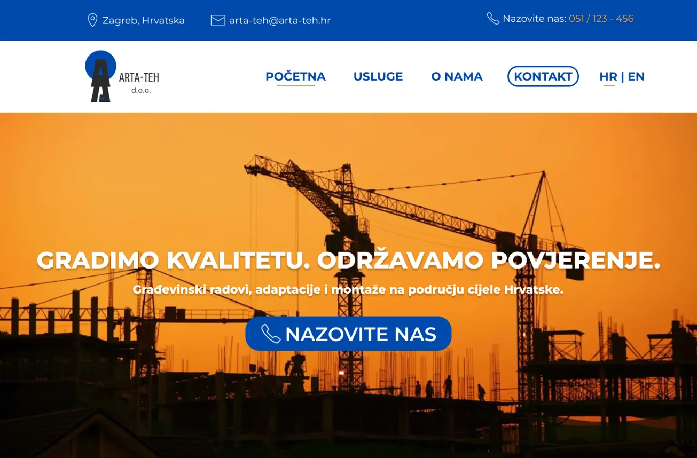
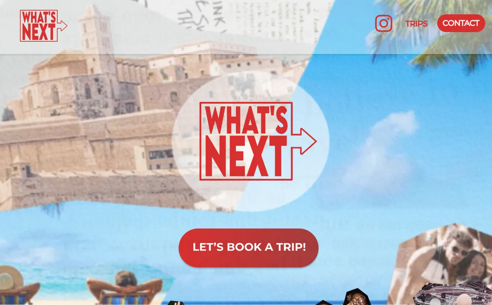
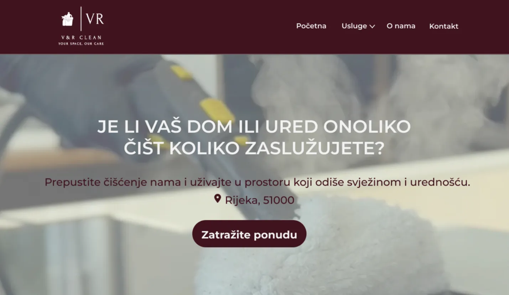

Web Projects
Development
Design
Collateral
RedCap – 3D Character Animation
This project combines 3D design, animation and front-end development to
represent a
brand I created.
3D MODEL | 3D ANIMATION | LOGO | SPLINE | HTML | CSS
V&R Cleaning – Full Website Development & Design Implementation
For this project, I created the entire website for V&R Cleaning — from the initial
design concept and full page structure to complete front-end
development. I worked with their existing logo, prepared all content, and
designed the layout to match the brand’s identity.
FIGMA | HTML | CSS | JAVASCRIPT | WORDPRESS | PHP
Kinetik – Interactive Web Experience
This project highlights skills in creative direction, animation and front-end
development through Kinetik - an artistic, eccentric brand built on
dynamic visual interaction.
LOGO | FIGMA | HTML | CSS | JAVASCRIPT
{kind=link}
This Portfolio – My First Web Project
Embarking on my front-end development journey, I took a course to master the
fundamentals
of
HTML, CSS, and JavaScript.
Shortly after, I began working on my very own portfolio - the one you’re currently
viewing -
where I could apply my newfound skills.
LOGO | FIGMA | HTML | CSS | JAVASCRIPT | GIT

Click to view full page
Arta Teh – Construction Company Website
This project showcases the complete visual identity and web design for the
construction
company Arta Teh.
I designed the logo and created a modern, professional one-page website that
reflects
the company’s reliability, precision, and aesthetic values.
LOGO | FIGMA

Click to view full page
What's Next – Branding & Web Design Concept
During an internship in Spain, I worked on the logo and website design for
What’s
Next,
a company focused on parties and events. The goal was to create a modern, energetic
look
that
appeals to a young, lively audience.
LOGO | FIGMA

Click to view full page
V&R Cleaning – Web Design Concept
I designed the whole page for V&R Cleaning Service in Figma, aiming for
a
modern
and professional look that clearly showcases their cleaning services.
Note: the full website is shown separately in Web Development; here is the Figma
design
for
the
home page.
FIGMA
{kind=link}
{kind=link}
RedCap – Brand Collateral
This project presents part of the RedCap visual identity, including business cards
and
branded tote bags.
The concept builds on the recognizable red cap symbol - a minimal yet bold element
that
reflects creativity, confidence, and individuality.
{kind=link}
{kind=link}
Arta Teh – Brand Collateral
This part of the project shows the Arta Teh brand applications, including business
cards
and T-shirt design.
It extends the already established visual identity, maintaining a professional,
structured,
and
modern aesthetic consistent with their main website design.